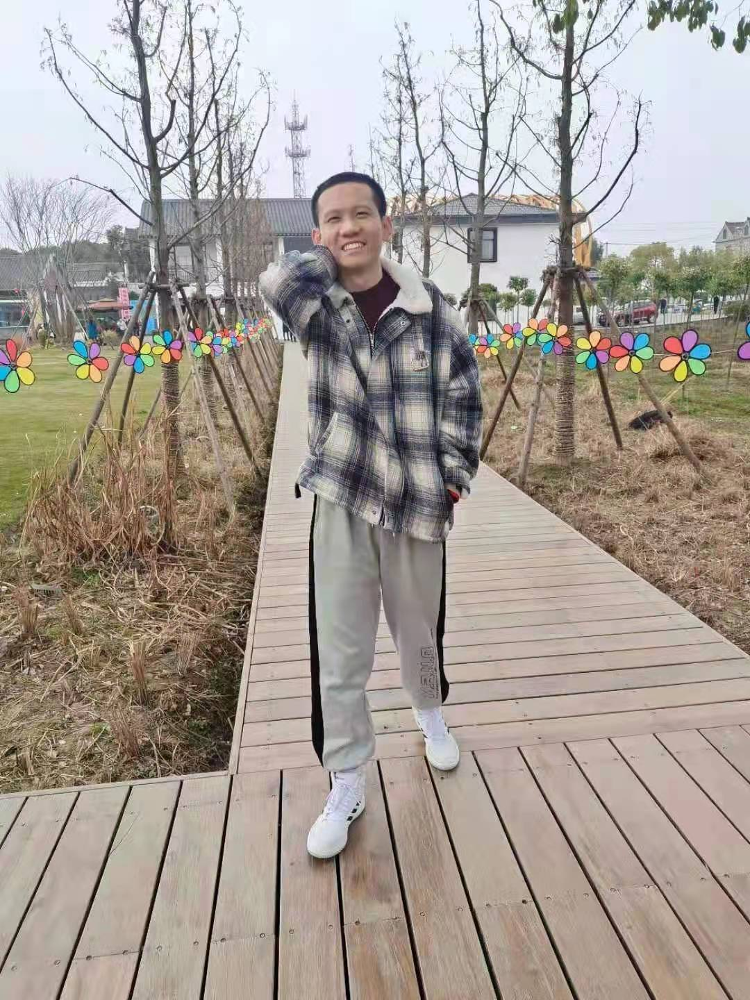
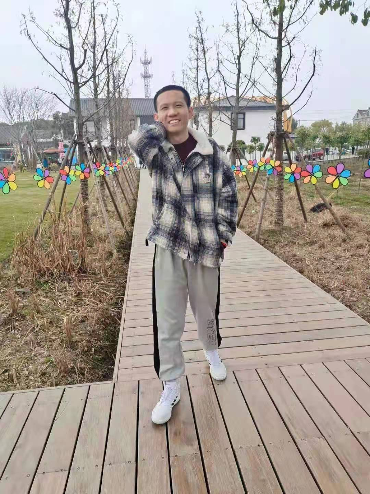

Hello everyone! I am a student from Ningbo City College Of Vocational Technology. I'm a shy, not very talkative boy. But I am honest and humble, able to bear hardships and stand hard work. And at the same time, I will always finish the teacher's homework ahead of time and get along well with my classmates. Therefore, in the eyes of the teacher, I am a disciplined and reassuring student. In class, I will listen carefully and actively take notes. I will also spend a certain amount of time studying hard after class, so I have achieved relatively good results many times. In the last year, I won the outstanding student scholarship(Third place) in my class. Meanwhile, I also obtained University English Level 4 Certificate. In life, I have a certain independent ability and able to adapt to school life as soon as possible, although my hands-on ability is relatively lacking.
 
